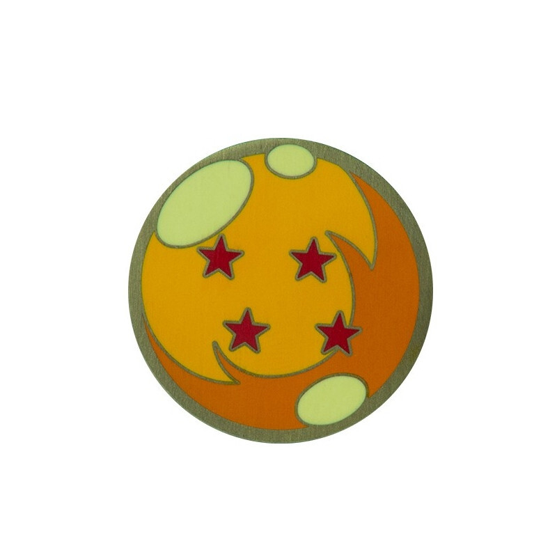
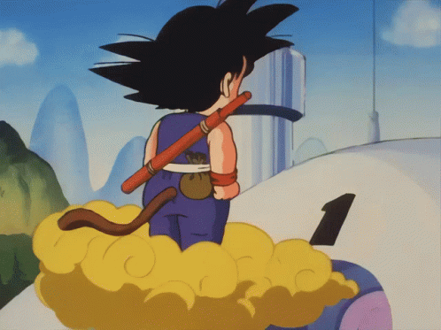

DRAGON BALL : l’histoire

[cliquez sur la boule de cristal pour lancer/stopper la musique]Dans une forêt isolée, un petit garçon à la queue de singe, Son Goku, vit seul depuis la mort de son grand-père adoptif, Son Gohan. Doté d’une force surhumaine, il ignore presque tout du monde extérieur. Sa vie bascule le jour où il croise Bulma, une jeune inventrice partie à la recherche des sept Dragon Balls. Réunies, ces sphères magiques permettent d’invoquer le dragon Shenron, qui exauce un vœu. Goku décide de l’accompagner, et le duo se lance dans un périple plein d’humour et de rencontres : le cochon métamorphe Oolong, le bandit du désert Yamcha et son fidèle Puar.

Au fil de leurs aventures, Goku fait la connaissance de Tortue Géniale, un vieux maître des arts martiaux aussi sage que farceur, qui devient son mentor. Aux côtés de son nouvel ami et rival Krillin, le garçon s’entraîne durement : livrer du lait, labourer, courir, porter une lourde carapace. Il participe ensuite au Tenkaichi Budokai, le grand tournoi d’arts martiaux. Il y progresse à toute vitesse, mais s’incline en finale face au mystérieux Jackie Chun.
Son parcours le met bientôt face à l’armée du Ruban Rouge, une organisation sans scrupules qui veut réunir les Dragon Balls pour dominer le monde. Goku affronte ses sbires un à un : le général Blue, la Tour Muscle, le robot Androïde 8, puis l’assassin Tao Pai Pai, qui le blesse gravement. Il s’entraîne alors auprès de Kami-sama, le gardien de la Terre, avant de revenir prendre sa revanche et de faire s’effondrer l’armée.
Les années passent, et Goku retrouve le Tenkaichi Budokai, où il croise de nouveaux adversaires, dont Tenshinhan et son compagnon Chaozu, anciens élèves de l’école rivale de la Grue. Mais une menace bien plus sombre se profile : le Roi Démon Piccolo, un être maléfique qui avait été scellé il y a des siècles et qui revient semer la terreur. Il élimine plusieurs compagnons de Goku et prend le contrôle du monde. Après un entraînement intense, Goku finit par l’affronter et le vaincre. Piccolo a toutefois eu le temps de donner naissance à un successeur, qui s’inscrit au tournoi suivant.
Devenu adulte, Goku retrouve ce nouvel adversaire lors d’un dernier Tenkaichi Budokai. Après un combat acharné, il l’emporte, puis épouse Chichi, rencontrée enfant. L’aventure se referme sur un héros qui n’a jamais cessé de progresser, animé par la joie du combat et l’envie de se dépasser.
Plus qu’une simple histoire de combats, Dragon Ball est un récit d’amitié et de découverte, inspiré du roman chinois La Pérégrination vers l’Ouest. Signée Akira Toriyama, cette saga mêle humour, aventure et arts martiaux, et reste l’une des œuvres les plus marquantes de l’histoire du manga.